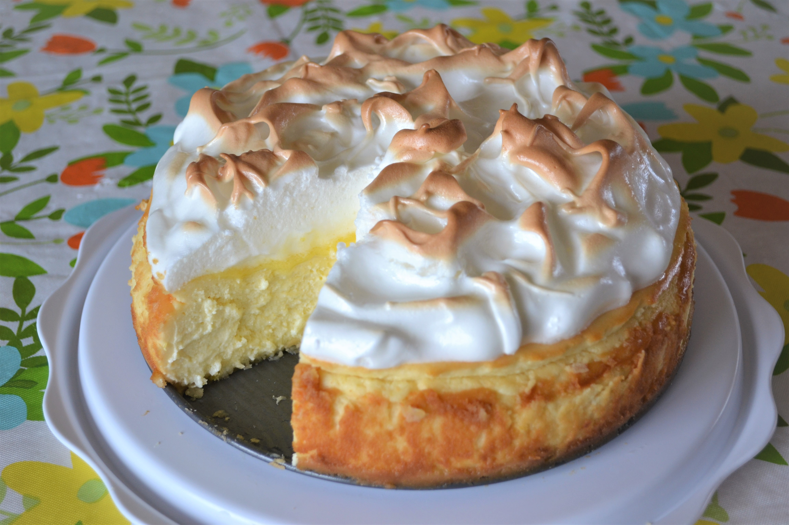

Lemon Meringue Cheesecake

Description
Love lemon meringue pie and cheesecake? Well this is the best of both worlds. Great any time of year and sure to impress your guests.
Ingredients
- 2 cups shortbread cookie crumbs
- ¼ cup melted butter
- 3 (8 ounce) packages cream cheese, softened
Steps
- Preheat oven to 325 degrees F (165 degrees C).
- Mix cookie crumbs and melted butter together in a bowl until evenly combined; press into the bottom of a 9-inch springform pan.
- Beat cream cheese, sour cream, and 1 cup sugar together in a bowl using an electric mixer until smooth and creamy. Add eggs one at a time, beating well after each addition. Mix lemon juice, vanilla extract, and lemon zest into cream cheese mixture, scraping bottom and sides of the bowl. Spread mixture over cookie crust in the springform pan.